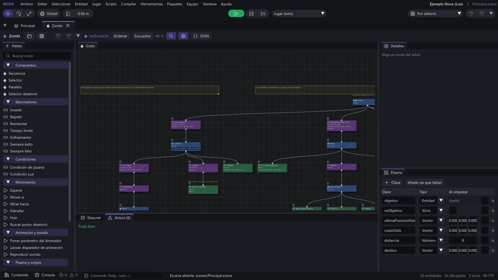

Un editor con pestañas
Cada escena, script, material, árbol de IA o interfaz se abre en su propia pestaña con sus paneles. Jerarquía, Inspector, Contenido, Consola, deshacer en todo y modo juego (también en red) sin salir del editor.
Leer la guía →